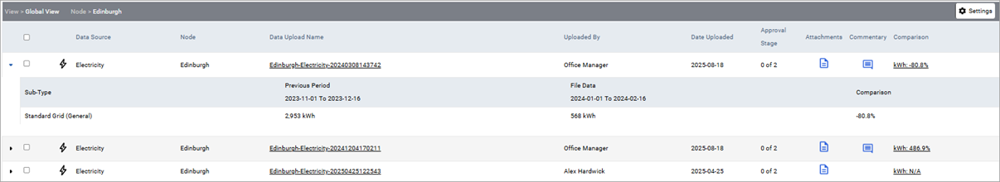
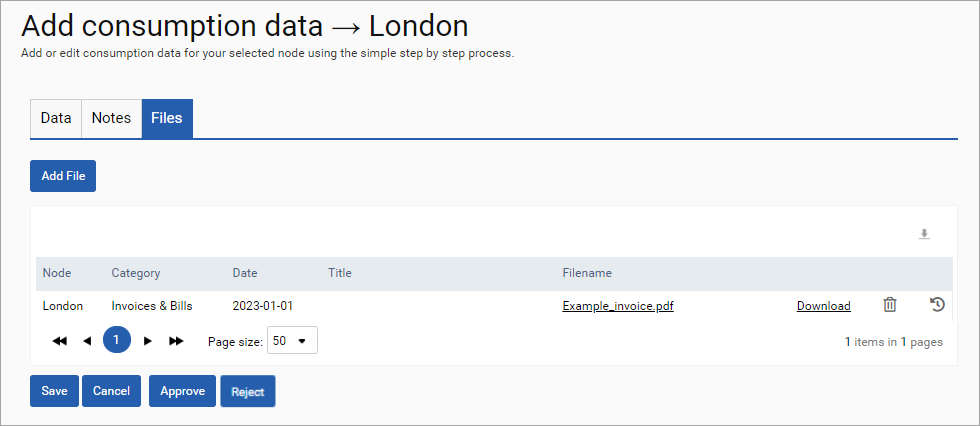
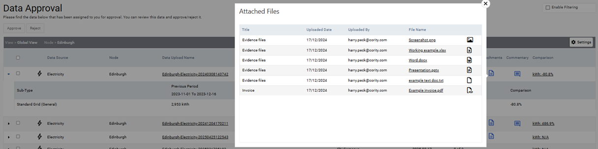
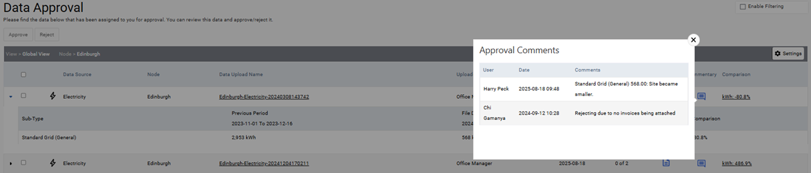
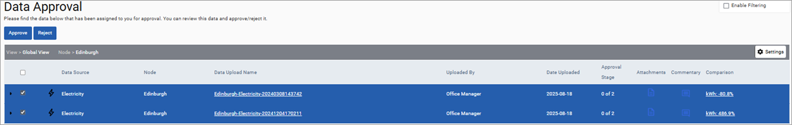

Cority allows for input data to require sign-off by other users before it is processed and available for analysis. Approvals can be switched on for data sources in Environment > Settings > Data Approval. Please see the Admin Settings section for additional information on setting up approvals. Once set up, any data uploaded to a data source that requires approval will be defined as ‘Unapproved’ and will activate an email (sent overnight) to the signoff user group. This data will not calculate or be available for analysis until the approver logs into SPM and approves the data. If required more than one level of approval can be set up, creating a chain of approval.
To access approvals, click the Approvals button in the navigation bar at the top of the page. Select the node and view you want to manage. Note, you must have sign off access to the view you select in order to approve data within it.
After selecting a view, the files available for review will be displayed. In this table you can do the following:
Compare to the previous period. The Comparison column displays the percentage difference from the previous period; to see the details of the previous period's data you can either click the link in the Comparison column, or the arrow at the left of the upload to show/hide the sublist. A percentage change of "N/A" in the Comparison column means there is either no data uploaded for the previous period, the data that has been uploaded is still awaiting approval, or the data has been rejected.

Note: This table may display sub-types that were in previous uploads but are not the current upload. This is controlled by the "Show previous period's missing sub-types?" option in the Admin Settings.
Open an upload. To open an upload, click a file name. If the upload was uploaded via input form you can navigate between the tabs to view any notes or files attached to the upload. You can approve or reject the file immediately by clicking the Approve or Reject button on this page.

View any attachments or notes directly from the approval table:
If there are attachments for an upload, you will see an icon under the Attachments column. Click this icon to see a list of attachments; you can then open any of those files from the popup.

If there are any approval comments associated with an upload, you will see an icon under the Commentary column. Click this icon to view any notes from the approver.

Approve or reject file(s). To approve or reject one or more files, select them using the tick-box on the left-hand side and then click the appropriate button (Approve or Reject). You can also approve or reject a file when viewing it (see Open an Upload above).

If rejected, the user who input the data will receive an email notifying them of the relevant files and associated comments. The file will be flagged as rejected. Once checked and resubmitted, the approver will again receive an email that the data requires approval.